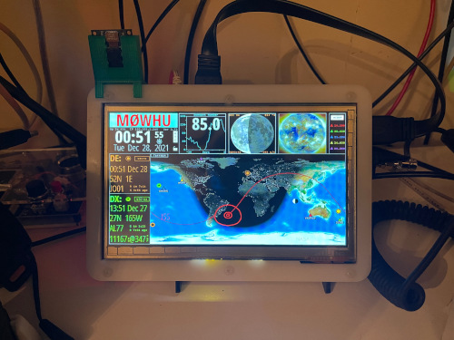
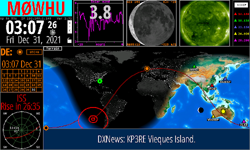
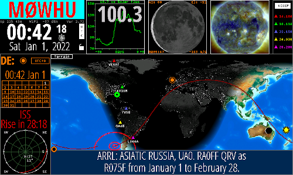
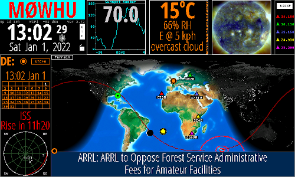

Ham Clock
Something I've wanted to do for a while was build a Ham Clock. This is software which run on a raspberry pi (and many other types of computer), and functions like an interactive clock radio.
I've used raspberry pi's since the orginal, and to say i have a couple knocking around is an understatement! I was also in the fortunate position of having a suitable screen sitting unused.

Installing and confiuring the software was no issue, I had much more trouble trying to get the screen functioning correctly!
All instrctions can be found at the Clear Sky Institute's website. The installation is really a doddle.
  